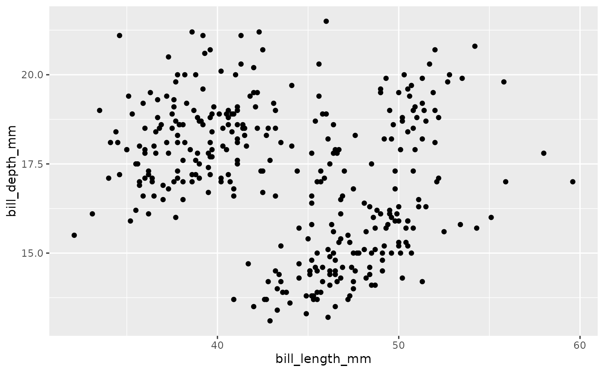

library(tidyclust)
library(tidyverse)
#> ── Attaching packages ─────────────────────────────────────── tidyverse 1.3.1 ──
#> ✔ ggplot2 3.3.6 ✔ purrr 0.3.4
#> ✔ tibble 3.1.7 ✔ dplyr 1.0.9
#> ✔ tidyr 1.2.0 ✔ stringr 1.4.0
#> ✔ readr 2.1.2 ✔ forcats 0.5.1
#> ── Conflicts ────────────────────────────────────────── tidyverse_conflicts() ──
#> ✖ dplyr::filter() masks stats::filter()
#> ✖ dplyr::lag() masks stats::lag()
library(tidymodels)
#> ── Attaching packages ────────────────────────────────────── tidymodels 0.2.0 ──
#> ✔ broom 0.8.0 ✔ rsample 0.1.1
#> ✔ dials 1.0.0 ✔ tune 0.2.0
#> ✔ infer 1.0.2 ✔ workflows 0.2.6.9001
#> ✔ modeldata 0.1.1 ✔ workflowsets 0.2.1
#> ✔ parsnip 0.2.1.9002 ✔ yardstick 1.0.0
#> ✔ recipes 0.2.0
#> ── Conflicts ───────────────────────────────────────── tidymodels_conflicts() ──
#> ✖ scales::discard() masks purrr::discard()
#> ✖ dplyr::filter() masks stats::filter()
#> ✖ recipes::fixed() masks stringr::fixed()
#> ✖ dplyr::lag() masks stats::lag()
#> ✖ parsnip::prepare_data() masks tidyclust::prepare_data()
#> ✖ yardstick::spec() masks readr::spec()
#> ✖ recipes::step() masks stats::step()
#> • Dig deeper into tidy modeling with R at https://www.tmwr.org
set.seed(838383)
data("penguins", package = "modeldata")A brief introduction to the k-means algorithm
k-means is a method of unsupervised learning that produces a partitioning of observations into k unique clusters. The goal of k-means is to minimize the sum of squared Euclidian distances between observations in a cluster and the centroid, or geometric mean, of that cluster.
In k-means clustering, observed variables (columns) are considered to be locations on orthogonal axes in multidimensional space. For example, in the plot below, each point represents an observation of one penguin, and the location in 2-dimensional space is determined by the bill length and bill depth of that penguin.
#> Warning: Removed 2 rows containing missing values (geom_point).
A k-means cluster assignment is achieved by iterating to convergence from random initial conditions. The algorithm proceeds as follows:
Choose k random observations in the dataset. These locations in space are declared to be the initial centroids.
Assign each observation to the nearest centroid.
[pic - we should have automatic functions for this. if I could predict with pre-supplied centroids that would be cool.]
Compute the new centroids of each cluster.
Repeat steps 2 and 3 until the centroids do not change.
[gif?]
Things to note
Because k-means relies on random initial conditions, the procedure may not result in identical cluster assignments on subsequent runs.
Because k-means is a greedy algorithm, it is not guaranteed to achieve a globally optimal solution.
k-means produces a partition: each observation is assigned to exactly one cluster
k-means is a non-stochastic approach; no probability model is assumed regarding the selection of the observations or the values of the variables.
k-means specification in {tidyclust}
To specify a k-means model in tidyclust, simply choose a value of \(k\) and an engine:
kmeans_spec <- k_means(k = 3) %>%
set_engine_tidyclust("stats")
kmeans_spec
#> K Means Cluster Specification (partition)
#>
#> Main Arguments:
#> k = 3
#>
#> Computational engine: statsOnce specified, a model may be “fit” to a dataset by providing a formula and data frame. Note that unlike in supervised modeling, the formula should not include a response variable.
kmeans_spec_fit <- kmeans_spec %>%
fit(~ bill_length_mm + bill_depth_mm, data = penguins)
kmeans_spec_fit
#> tidyclust cluster object
#>
#> K-means clustering with 3 clusters of sizes 85, 116, 141
#>
#> Cluster means:
#> bill_length_mm bill_depth_mm
#> 1 50.90353 17.33647
#> 2 45.51379 15.64397
#> 3 38.40355 18.27943
#>
#> Clustering vector:
#> 1 2 3 5 6 7 8 9 10 11 12 13 14 15 16 17 18 19 20 21
#> 3 3 3 3 3 3 3 3 3 3 3 3 3 3 3 3 3 3 2 3
#> 22 23 24 25 26 27 28 29 30 31 32 33 34 35 36 37 38 39 40 41
#> 3 3 3 3 3 3 3 3 3 3 3 3 3 3 3 3 3 3 3 3
#> 42 43 44 45 46 47 48 49 50 51 52 53 54 55 56 57 58 59 60 61
#> 3 3 2 3 3 3 3 3 3 3 3 3 3 3 3 3 3 3 3 3
#> 62 63 64 65 66 67 68 69 70 71 72 73 74 75 76 77 78 79 80 81
#> 3 3 3 3 3 3 3 3 3 3 3 3 2 3 2 3 3 3 3 3
#> 82 83 84 85 86 87 88 89 90 91 92 93 94 95 96 97 98 99 100 101
#> 2 3 3 3 3 3 3 3 3 3 3 3 3 3 3 3 3 3 2 3
#> 102 103 104 105 106 107 108 109 110 111 112 113 114 115 116 117 118 119 120 121
#> 3 3 3 3 3 3 3 3 2 3 2 3 3 3 2 3 3 3 3 3
#> 122 123 124 125 126 127 128 129 130 131 132 133 134 135 136 137 138 139 140 141
#> 3 3 3 3 3 3 3 3 2 3 2 3 3 3 3 3 3 3 3 3
#> 142 143 144 145 146 147 148 149 150 151 152 153 154 155 156 157 158 159 160 161
#> 3 3 3 3 3 3 3 3 3 3 3 2 1 2 1 2 2 2 2 2
#> 162 163 164 165 166 167 168 169 170 171 172 173 174 175 176 177 178 179 180 181
#> 2 2 1 2 2 2 1 2 1 2 1 1 2 2 2 2 2 2 2 2
#> 182 183 184 185 186 187 188 189 190 191 192 193 194 195 196 197 198 199 200 201
#> 1 2 2 2 1 1 1 2 2 2 1 2 1 2 1 1 2 2 1 2
#> 202 203 204 205 206 207 208 209 210 211 212 213 214 215 216 217 218 219 220 221
#> 2 2 2 2 1 2 2 2 2 2 1 2 2 2 1 2 1 2 1 2
#> 222 223 224 225 226 227 228 229 230 231 232 233 234 235 236 237 238 239 240 241
#> 1 2 2 2 2 2 1 2 1 2 2 1 1 2 1 2 1 2 1 2
#> 242 243 244 245 246 247 248 249 250 251 252 253 254 255 256 257 258 259 260 261
#> 1 2 1 2 1 2 1 1 2 2 1 2 1 2 1 2 2 2 1 2
#> 262 263 264 265 266 267 268 269 270 271 273 274 275 276 277 278 279 280 281 282
#> 2 1 1 2 1 2 1 2 1 2 2 1 2 1 2 1 1 2 1 2
#> 283 284 285 286 287 288 289 290 291 292 293 294 295 296 297 298 299 300 301 302
#> 2 1 2 1 2 1 2 1 2 1 1 1 2 1 2 1 2 1 2 1
#> 303 304 305 306 307 308 309 310 311 312 313 314 315 316 317 318 319 320 321 322
#> 1 1 2 1 3 1 2 1 1 2 2 1 2 1 1 2 1 2 1 1
#> 323 324 325 326 327 328 329 330 331 332 333 334 335 336 337 338 339 340 341 342
#> 1 1 1 1 2 1 2 1 2 1 2 1 1 2 1 2 2 1 2 1
#> 343 344
#> 1 1
#>
#> Within cluster sum of squares by cluster:
#> [1] 617.9859 754.7437 944.4986
#> (between_SS / total_SS = 79.8 %)
#>
#> Available components:
#>
#> [1] "cluster" "centers" "totss" "withinss" "tot.withinss"
#> [6] "betweenss" "size" "iter" "ifault"To access the only the results produced by the engine - in this case, stats::kmeans - simply extract the fit from the fitted model object:
kmeans_spec_fit$fit
#> K-means clustering with 3 clusters of sizes 85, 116, 141
#>
#> Cluster means:
#> bill_length_mm bill_depth_mm
#> 1 50.90353 17.33647
#> 2 45.51379 15.64397
#> 3 38.40355 18.27943
#>
#> Clustering vector:
#> 1 2 3 5 6 7 8 9 10 11 12 13 14 15 16 17 18 19 20 21
#> 3 3 3 3 3 3 3 3 3 3 3 3 3 3 3 3 3 3 2 3
#> 22 23 24 25 26 27 28 29 30 31 32 33 34 35 36 37 38 39 40 41
#> 3 3 3 3 3 3 3 3 3 3 3 3 3 3 3 3 3 3 3 3
#> 42 43 44 45 46 47 48 49 50 51 52 53 54 55 56 57 58 59 60 61
#> 3 3 2 3 3 3 3 3 3 3 3 3 3 3 3 3 3 3 3 3
#> 62 63 64 65 66 67 68 69 70 71 72 73 74 75 76 77 78 79 80 81
#> 3 3 3 3 3 3 3 3 3 3 3 3 2 3 2 3 3 3 3 3
#> 82 83 84 85 86 87 88 89 90 91 92 93 94 95 96 97 98 99 100 101
#> 2 3 3 3 3 3 3 3 3 3 3 3 3 3 3 3 3 3 2 3
#> 102 103 104 105 106 107 108 109 110 111 112 113 114 115 116 117 118 119 120 121
#> 3 3 3 3 3 3 3 3 2 3 2 3 3 3 2 3 3 3 3 3
#> 122 123 124 125 126 127 128 129 130 131 132 133 134 135 136 137 138 139 140 141
#> 3 3 3 3 3 3 3 3 2 3 2 3 3 3 3 3 3 3 3 3
#> 142 143 144 145 146 147 148 149 150 151 152 153 154 155 156 157 158 159 160 161
#> 3 3 3 3 3 3 3 3 3 3 3 2 1 2 1 2 2 2 2 2
#> 162 163 164 165 166 167 168 169 170 171 172 173 174 175 176 177 178 179 180 181
#> 2 2 1 2 2 2 1 2 1 2 1 1 2 2 2 2 2 2 2 2
#> 182 183 184 185 186 187 188 189 190 191 192 193 194 195 196 197 198 199 200 201
#> 1 2 2 2 1 1 1 2 2 2 1 2 1 2 1 1 2 2 1 2
#> 202 203 204 205 206 207 208 209 210 211 212 213 214 215 216 217 218 219 220 221
#> 2 2 2 2 1 2 2 2 2 2 1 2 2 2 1 2 1 2 1 2
#> 222 223 224 225 226 227 228 229 230 231 232 233 234 235 236 237 238 239 240 241
#> 1 2 2 2 2 2 1 2 1 2 2 1 1 2 1 2 1 2 1 2
#> 242 243 244 245 246 247 248 249 250 251 252 253 254 255 256 257 258 259 260 261
#> 1 2 1 2 1 2 1 1 2 2 1 2 1 2 1 2 2 2 1 2
#> 262 263 264 265 266 267 268 269 270 271 273 274 275 276 277 278 279 280 281 282
#> 2 1 1 2 1 2 1 2 1 2 2 1 2 1 2 1 1 2 1 2
#> 283 284 285 286 287 288 289 290 291 292 293 294 295 296 297 298 299 300 301 302
#> 2 1 2 1 2 1 2 1 2 1 1 1 2 1 2 1 2 1 2 1
#> 303 304 305 306 307 308 309 310 311 312 313 314 315 316 317 318 319 320 321 322
#> 1 1 2 1 3 1 2 1 1 2 2 1 2 1 1 2 1 2 1 1
#> 323 324 325 326 327 328 329 330 331 332 333 334 335 336 337 338 339 340 341 342
#> 1 1 1 1 2 1 2 1 2 1 2 1 1 2 1 2 2 1 2 1
#> 343 344
#> 1 1
#>
#> Within cluster sum of squares by cluster:
#> [1] 617.9859 754.7437 944.4986
#> (between_SS / total_SS = 79.8 %)
#>
#> Available components:
#>
#> [1] "cluster" "centers" "totss" "withinss" "tot.withinss"
#> [6] "betweenss" "size" "iter" "ifault"Cluster assignments and predictions
Of the information provided from the model fit, the primary objective is typically the cluster assignments of each observation. These can be accessed via the extract_cluster_assignment() function:
kmeans_spec_fit %>%
extract_cluster_assignment()
#> # A tibble: 342 × 1
#> .cluster
#> <fct>
#> 1 Cluster_1
#> 2 Cluster_1
#> 3 Cluster_1
#> 4 Cluster_1
#> 5 Cluster_1
#> 6 Cluster_1
#> 7 Cluster_1
#> 8 Cluster_1
#> 9 Cluster_1
#> 10 Cluster_1
#> # … with 332 more rowsNote that this function renames clusters in accordance with the standard tidyclust naming convention and ordering: clusters are named “Cluster_1”, “Cluster_2”, etc. and are numbered by the order they appear in the rows of the training dataset.
Similarly, you can “predict” the cluster membership of new data using the predict_cluster() function:
new_penguin <- tibble(
bill_length_mm = 40,
bill_depth_mm = 15
)
kmeans_spec_fit %>%
predict_cluster(new_penguin)
#> [1] Cluster_1
#> Levels: Cluster_1In the case of kmeans, the cluster assignment is predicted by finding the closest final centroid to the new observation.
Augmenting datasets
To attach cluster assignments or predictions to a dataset, use augment_cluster():
### add thisCluster centroids
A cluster is typically characterized by the location of its final centroid. These can be accessed by:
kmeans_spec_fit %>%
extract_centroids()
#> # A tibble: 3 × 3
#> .cluster bill_length_mm bill_depth_mm
#> <chr> <dbl> <dbl>
#> 1 Cluster_1 38.4 18.3
#> 2 Cluster_2 45.5 15.6
#> 3 Cluster_3 50.9 17.3[interpretation]